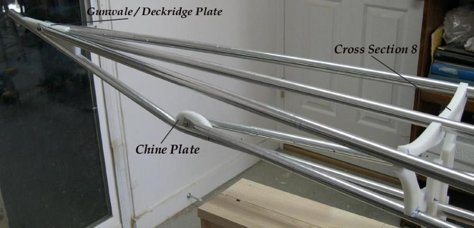

| HDPE Stern Plates | Menu Last Page Next Page |
|

Sea Ranger Stern Stringer Dimensions (Approximate)Gunwale Stringers - 34.5"" long overall ( 1.5" of the 12" insert showing and included in the 34.5") measured form cross section 8.Deckridge Stringer - 30" long measured from cross section 8. The aft deck stringer is 84" long measured from cross section 5. Chine Stringer - 18" long ( 5" of the insert showing) measured form cross section 8. Keel / Bow - The end of the bow is 39" measured from cross section 8. The keel transitions into the bow 19.5" from cross section 8. Stem Plates - Two HDPE stem plates hold the stringers in place. The deck stringer and gunwale stringers share the same plate. The plates are screwed through the keel with 1" stainless screws. There are 2 screws holding the chine plate, and 3 screws holding the gunwale / deckridge plate. |
|